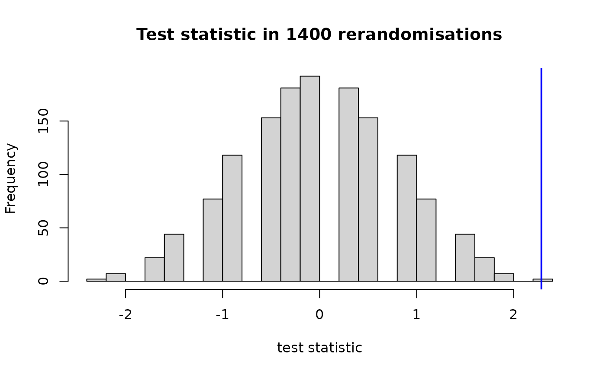
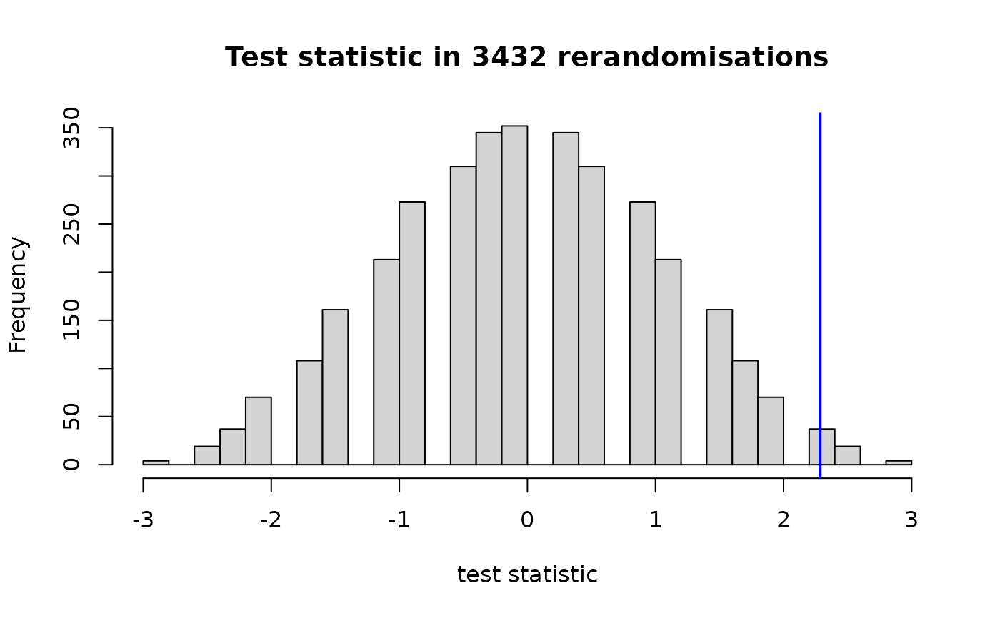

Randomisation testing for two-group comparisons
rand_test.RdComputes p-values under the strong null hypothesis of no differential treatment effect for any unit.
Usage
rand_test(
outcome,
treatment_idx,
block = NULL,
statistic = stud_mean_diff,
exact = TRUE,
plot = TRUE,
M = 20000,
xlab = "test statistic"
)Arguments
- outcome
Vector of numeric outcomes.
- treatment_idx
Indices of observations in treatment condition.
- block
When using blocking, specifies which units are blocked together.
- statistic
A test statistic for a two-group comparison (see test_statistics).
- exact
If
TRUE(default), exhaustive rerandomisation is used. Else, Monte Carlo rerandomisation.- plot
If
TRUE(default), the distribution of test statistics under H0 is plotted.- M
Number of Monte Carlo samples (only if
exact == FALSE).- xlab
x-axix label for the histogram showing the H0 distribution of the test statistic.
Examples
learners <- data.frame(
L1 = c(rep("German", 6), rep("French", 8)),
Learner = c(1:6, 1:8)
)
learners$Learner <- paste(learners$L1, learners$Learner)
learners$MethodB <- round(rnorm(14, mean = 9, sd = 1))
learners$MethodB <- ifelse(learners$L1 == "German",
learners$MethodB + 3,
learners$MethodB)
differences <- rep(c(2, 1, 3, 0, 4), times = c(8, 3, 3, 0, 0)) |> sample()
learners$MethodA <- learners$MethodB - differences
my_min <- pmin(min(learners$MethodA, learners$MethodB), 0)
learners$MethodA <- learners$MethodA - my_min
learners$MethodB <- learners$MethodB - my_min
learners$Condition <- c(sample(rep(c(0, 1), each = 3)),
sample(rep(c(0, 1), each = 4)))
learners$Outcome <- learners$Condition * learners$MethodB +
(1 - learners$Condition) * learners$MethodA
# taking blocking into account (exhaustive randomisation)
rand_test(learners$Outcome, which(learners$Condition == 1),
block = learners$L1, statistic = mean_diff)

#> $`left-sided p-value`
#> [1] 1
#>
#> $`right-sided p-value`
#> [1] 0.001428571
#>
#> $`two-sided p-value`
#> [1] 0.002857143
#>
# without taking blocking into account
rand_test(learners$Outcome, which(learners$Condition == 1),
statistic = mean_diff)

#> $`left-sided p-value`
#> [1] 0.9932984
#>
#> $`right-sided p-value`
#> [1] 0.01748252
#>
#> $`two-sided p-value`
#> [1] 0.03496503
#>